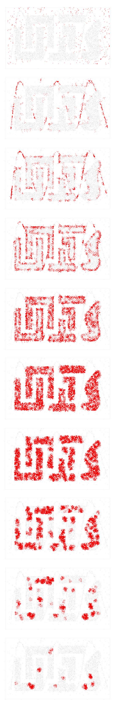
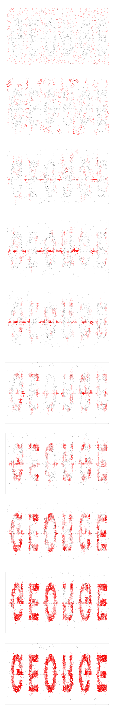
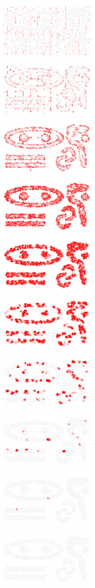
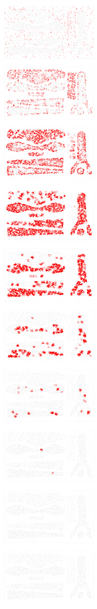

Extended DBSCAN to Cluster
Density Specific Regions
DBSCAN is a popular datamining algorithm for cluster analysis. An inherent limitation of DBSCAN is that it can only scan clusters above a certain specific density threshold. I have extended DBSCAN to limit the density of the cluster. This helps in extracting regions with specific densities.
The above results have been generated by running my algorithm over the CHAMELEON dataset, with different density characteristics.